FOOD DRIVE
誰かの「やってみたい」を、実現へ。
後輩の提案を受け、回収、保管、周知、教職員、寄付先との調整を行い、地域福祉へつなげた。
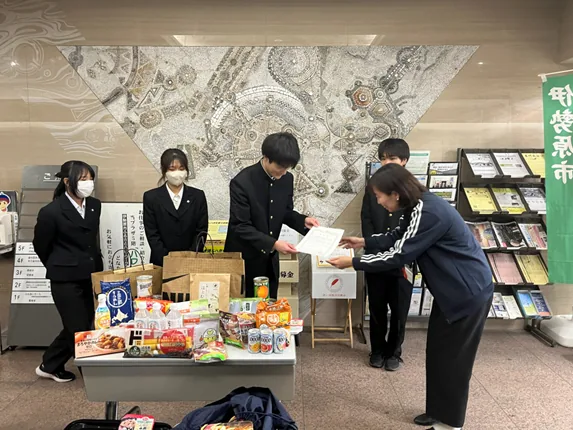
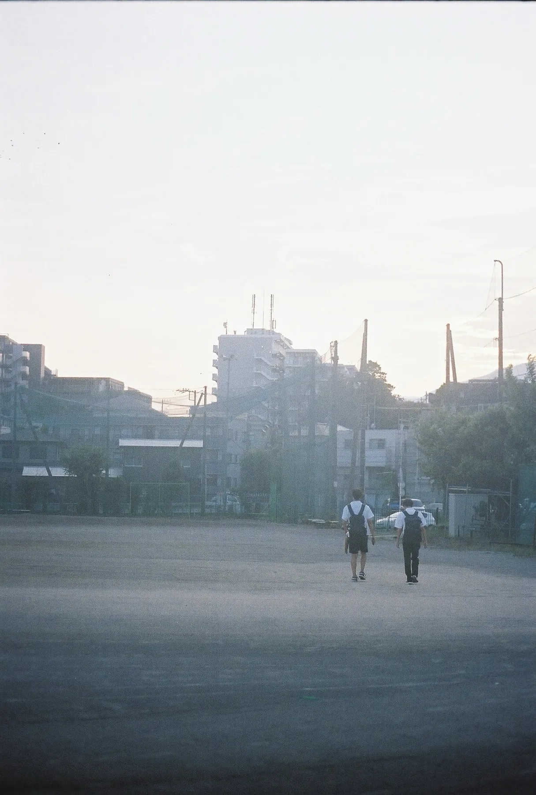
MEDIA / ACTION / PARTICIPATION
写真、文章、企画、制度を通して、
「伝える」を「参加する」に変えてきた記録。
同じ内容でも、写真の順序、言葉の選び方、参加方法、安全性の示し方によって、受け手の解釈と行動は変わる。私は制作と実践を通して、その条件を探ってきた。
写真を撮って終わらせない。順序、文章、余白、紙の形まで考え、読者に届く一冊へ。
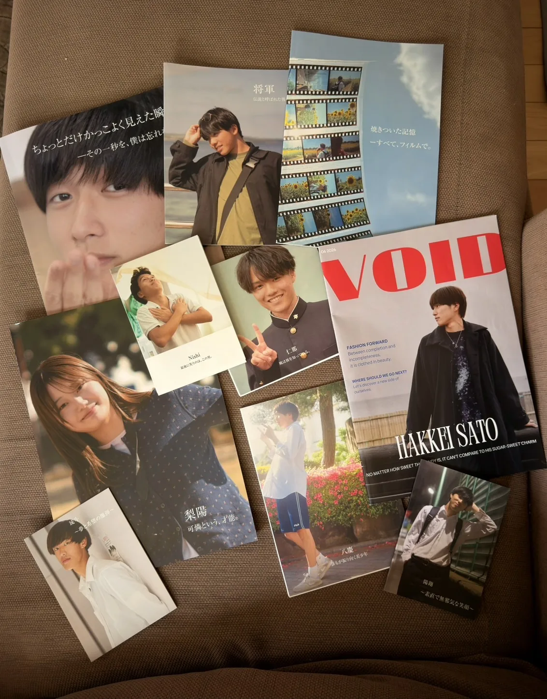
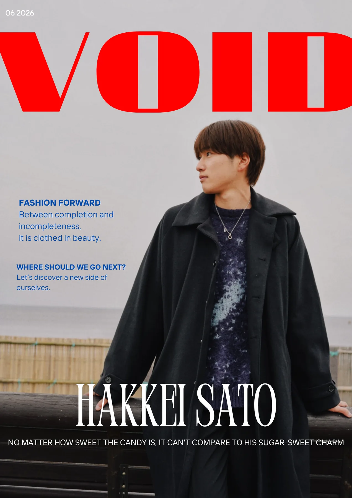
EDITORIAL DESIGN
撮影、選定、執筆、レイアウト、試し刷り、製本までを一つの表現として考えている。
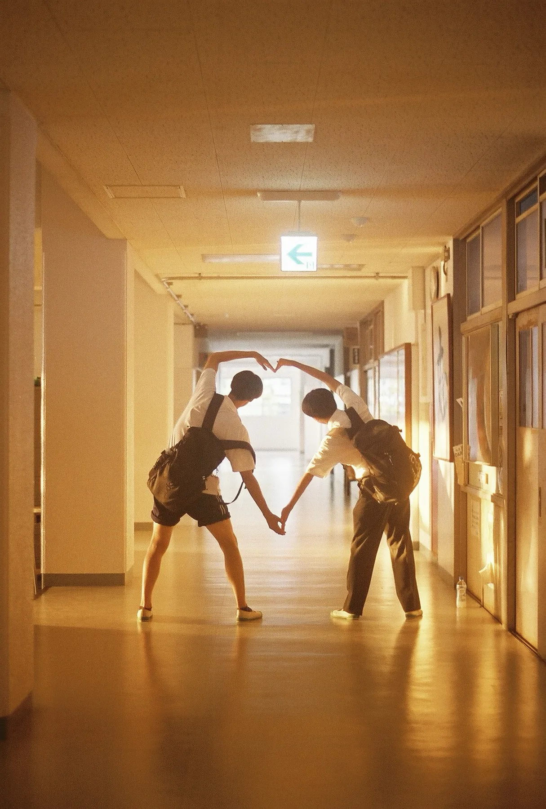
一人では、つくれない形がある。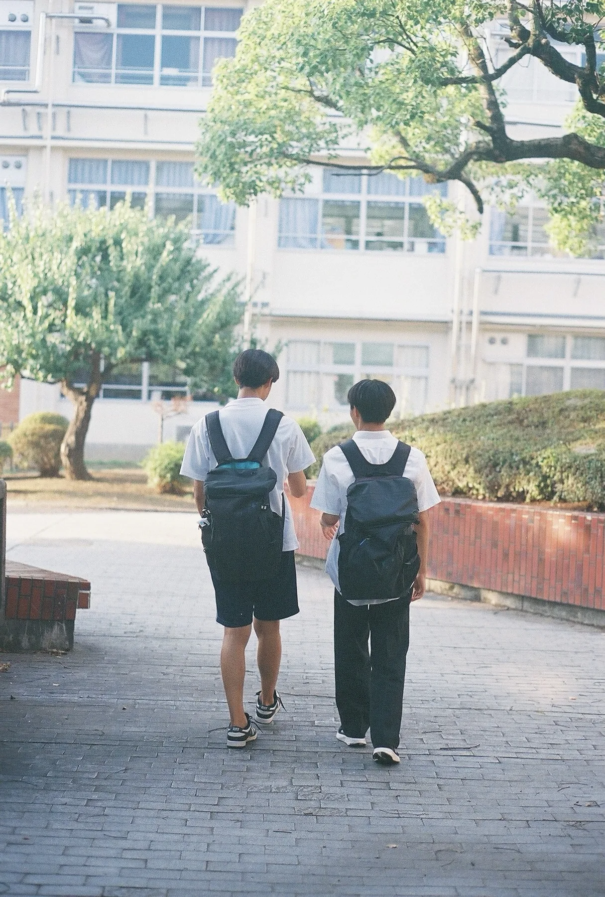
歩く。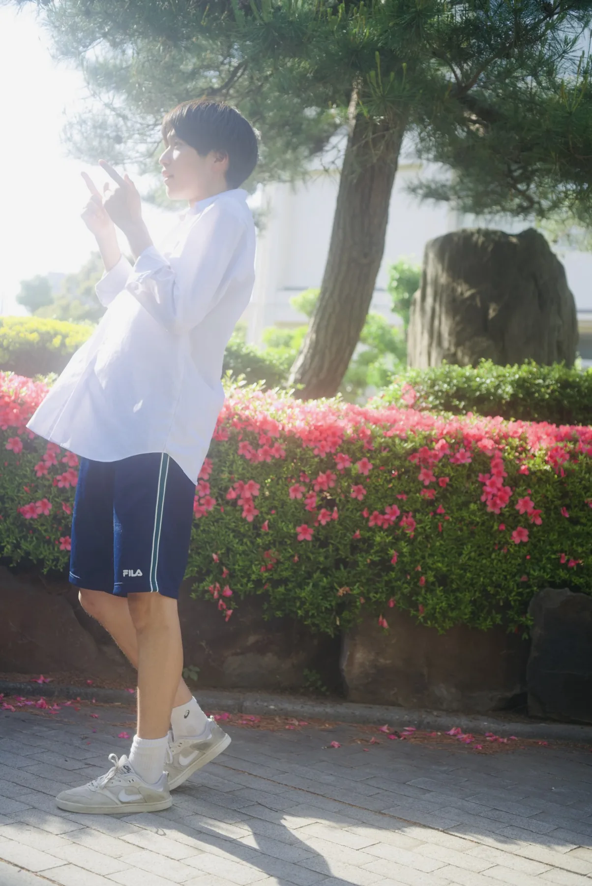
立ち止まる。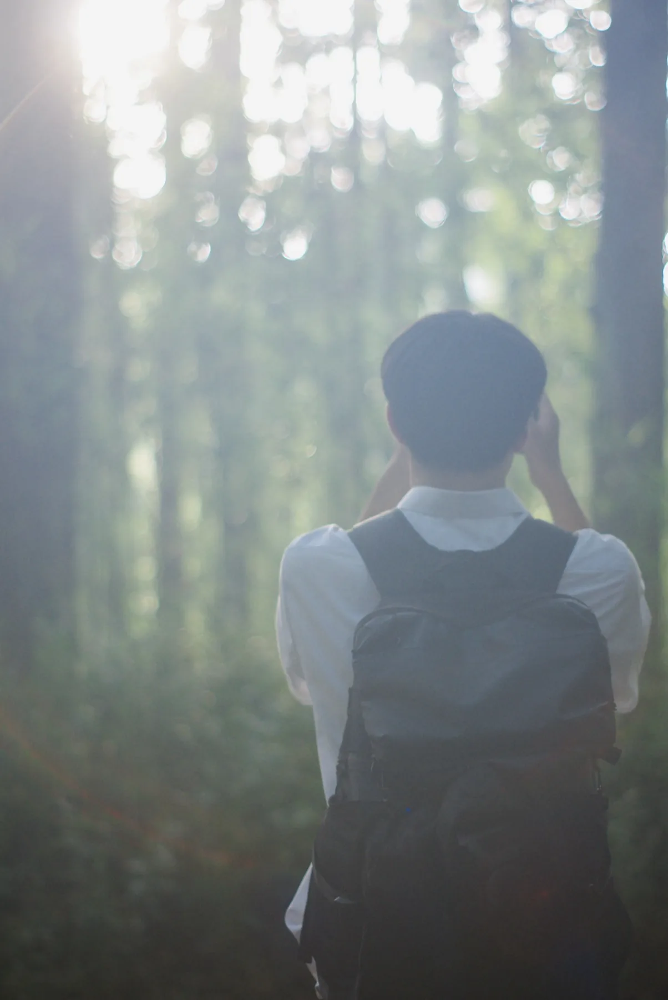
見る。提案は、そのままでは共有されない。誰に、何を、どの順番で伝えるかを設計して初めて、他者が参加できる企画になる。
FOOD DRIVE
後輩の提案を受け、回収、保管、周知、教職員、寄付先との調整を行い、地域福祉へつなげた。

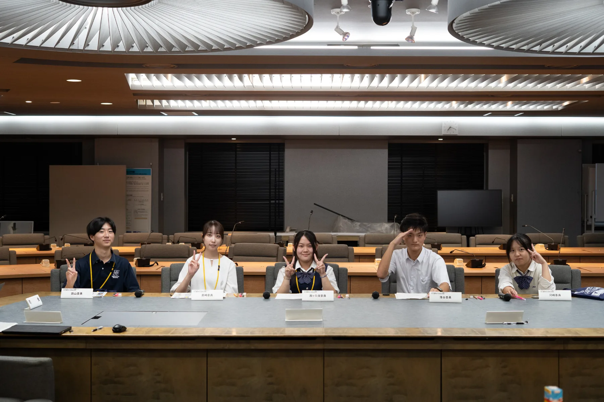
PUBLIC POLICY
防災デザインコンテストを提言し、県事業化後は審査と評価まで関わった。
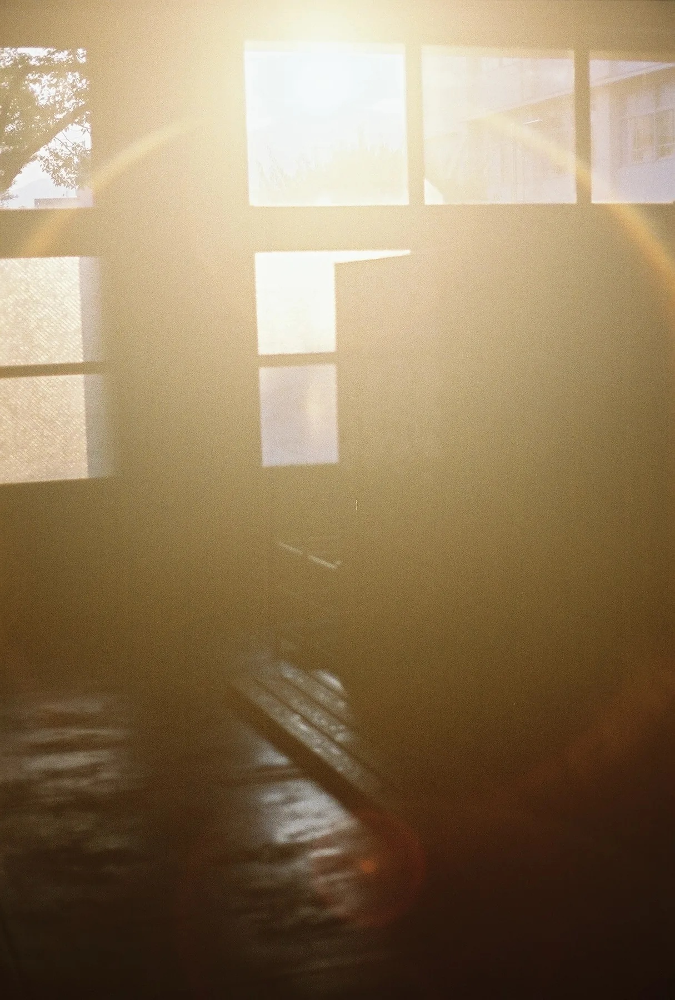
選ぶと、写真、資料、役割、現在への接続が開きます。
活動領域は広がっても、「思いつきを他者が使える形へ変える」という姿勢は変わらない。
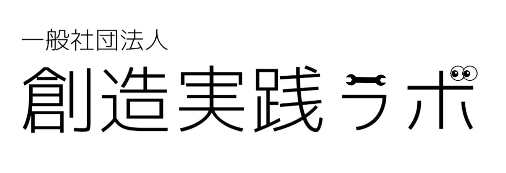
2026年6月2日、高校時代の同級生と一般社団法人創造実践ラボを設立。地域に必要な取組を考え、実際に動かし、反応から改善するための実践基盤。
ASUBORA / PROTOTYPE
「明日から、ボランティア。」は、参加前の安全確認から活動後の振り返り、記録、次の提案までをつなぐ仕組みである。
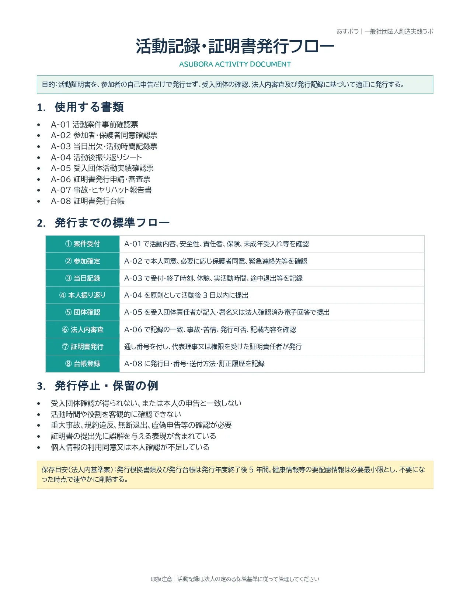
公益性、責任者、保険、未成年者対応、個人情報、当日の記録、団体確認、法人内審査までを設計した。
活動証明は、最初の参加を支えるのか。
振り返りは、経験と次の行動を変えるのか。
情報の見せ方は、誰を参加させ、誰を遠ざけるのか。
メディアを制作するだけでなく、受け手が情報をどう解釈し、なぜ行動するのかを調査したい。実践を成功例として飾らず、批判的に分析し、必要とされなければ作り直す。
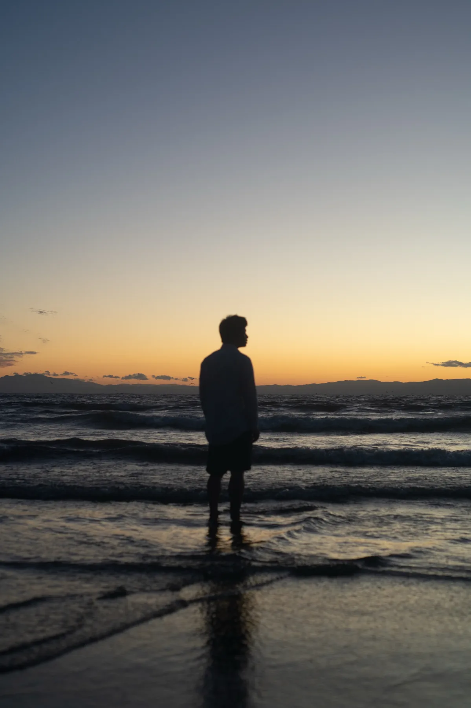
私は、目立つ情報を作りたいのではない。